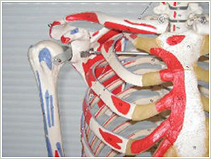

肋骨痛・肋軟骨炎
肋骨痛・肋軟骨炎とは
肋骨痛の主な原因の一つが肋軟骨炎で、肋骨と胸骨をつなぐ軟骨部分に炎症が起き、胸を押したり、深呼吸、咳、体をひねる動作で痛むのが特徴です。
体の動きを静めると痛みも和らぎます。

症状
鋭い痛み
圧迫感
鈍痛
一般的に第2肋骨から第5肋骨に起こりやすく、片側に起こることがほとんど
原因
肋軟骨炎は、主に胸骨と肋骨の間に存在する肋軟骨の慢性炎症により生じます。
炎症の原因としては、風邪などのウィルス感染症、外傷（胸部の打撲、上肢の繰り返し動作など）に見られることもありますが、多くの場合は原因不明です。
胸痛の原因として、内科的疾患の他に、肋骨・肋間筋・肋軟骨など胸壁より生じるものがあり、その約3割が肋軟骨炎によるものとの報告もあります。
また、男性よりも女性の方が2倍以上なりやすいと言われています。
診断
問診と、胸骨・肋骨間の圧痛の有無で行ないますが、虚血性心疾患や肺の病気との鑑別が重要です。
胸部レントゲン、血液検査、心電図などを必要に応じて行います。
鑑別疾患
鑑別疾患は、虚血性心疾患、気胸、肺腫瘍、肋骨骨折などです。
極端に症状が強い場合、吐き気、発汗、左腕の痛みなどを伴うと虚血性心疾患の可能性があります。
また、呼吸苦（酸素が足りないような息苦しさ）、高熱、発熱、赤み、腫れなどの症状があれば、気胸、肺炎など化膿性疾患、肋骨骨折などの可能性があります。
治療
胸部レントゲンと血液検査を行って内科的疾患がないことを確認し、非ステロイド系抗炎症薬（いわゆる痛み止め）の投与、症状が長引く場合には物理療法を行います。
症状が強く、長引く場合には、ブロック注射（ステロイドと局所麻酔薬）をすることもありますが、ここまで必要となる可能性はまずありません。
細菌など感染症によるの肋軟骨炎は、抗生物質の投与・手術的治療を行うこともあります。